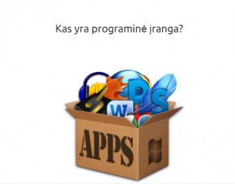

Kompiuterio programinė įranga - populiariausios programos, patarimai
 Skip to primary navigation Skip to main content Skip to primary sidebar Skip to footerVisai Paprasta
Kompiuteriai ir internetas paprasčiau
Kompiuteriai Remontuojame patys Techninė įranga Programinė įranga Išmanieji telefonai Internetas Naudingos programos ir svetainės Interneto svetainių kūrimas Susikurk interneto svetainę per 2 valandas Instrukcija nuo A iki Z > >Programinė įranga
Kaip kompiuteryje ištrinti neseniai atidarytų failų istoriją
2020-07-09 t0mas Komentuoti
Greičiausiai pastebėjote, kad kompiuterio failų naršyklėje yra kaupiama visų neseniai atidarytų failų istorija. Kartais tai gali būti patogu - ypač jei pamiršote, kur išsaugojote neseniai redaguotą failą. Tačiau jei neseniai naudotų failų istorija nesinaudojate, ar naudojatės kompiuteriu ne Skaityti toliau
Kategorijos: Programinė įranga Temos: windows 10
Kaip kompiuteryje pakeisti kalbą paprastai ir greitai
2020-07-02 t0mas Komentuoti
Norite kompiuteryje, kuriame įdiegta operacinė sistema Windows 10, pakeisti kalbą ar pridėti klaviatūrą nauja kalba? Tai visai nesunku padaryti - tereikia pakartoti keletą nesudėtingų šiame straipsnyje aprašytų žingsnių. Štai ką turite daryti. Kaip kompiuteryje su Windows 10 pakeisti Skaityti toliau
Kategorijos: Programinė įranga Temos: windows 10
Kaip kompiuteryje pakeisti darbalaukio foną
2020-07-01 t0mas Komentuoti
Nusibodo nuolat kompiuterio ekrane matomas tas pats paveikslėlis? Visai nesudėtinga ją pakeisti bet kuriuo kitu, esančiu jūsų kompiuteryje. Žemiau rasite trumpą instrukciją, kaip pakeisti ant ekrano matomą paveikslėlį, arba kaip bent kokią nuotrauką nustatyti kaip darbalaukio (desktopo) Skaityti toliau
Kategorijos: Programinė įranga Temos: windows 10
Ką padaryti, kad nešiojamas kompiuteris “neužmigtų” uždarius jo dangtį
2020-02-08 t0mas Komentuoti
Jei naudojatės nešiojamu kompiuteriu ne tik keliaudami, bet ir namuose jį prijungę prie monitoriaus ar televizoriaus (pavyzdžiui - dirbate prijungę prie kompiuterio išorinį monitorių, pelę ir klaviatūrą), tuomet greičiausiai būtų patogu, kad kompiuterį uždarius galėtumėte sėkmingai tęsti Skaityti toliau
Kategorijos: Programinė įranga Temos: nešiojamas kompiuteris
Kaip atstatyti failus iš šiukšlių dėžės
2019-09-05 t0mas Komentuoti
Ko gero kiekvienam dažniau naudojančiam kompiuterį teko per klaidą ar gerai neapgalvojus ištrinti kokį nors dokumentą, vaizdo ar garso failą, o galbūt netgi ir pilną katalogą svarbių duomenų. Laimė, kad kompiuteryje su Windows operacine sistema yra virtuali šiukšlių dėžė (angl. Recycle Bin) - Skaityti toliau
Kategorijos: Programinė įranga
Kaip nufotografuoti kompiuterio ekraną, ir jame pažymėti norimą objektą
2019-08-02 t0mas Komentuoti
Prisireikė nufotografuoti kompiuterio ekrane matomą vaizdą, ir jame ką nors pažymėti? Su Windows 10 tai padaryti visai nesunku, ir tam nereikia jokių papildomų programų - tereikia panaudoti vieną gudrų Windows 10 sistemoje esantį įrankį. Štai kaip tai padaryti. Kaip nufotografuoti kompiuterio Skaityti toliau
Kategorijos: Programinė įranga
Page 1 Page 2 Page 3 … Page 9 Sekantis »Primary Sidebar
Ieškau informacijos apie
Kompiuterius
Windows 10
Skype
WordPress
Android
Populiariausi
Kaip per vieną vakarą susikurti interneto svetainę
Kaip perinstaliuoti arba naujai suinstaliuoti Windows 10
Kaip redaguoti PDF failus naudojant Microsoft Word
Kaip naudotis Google Maps navigacija išmaniajame telefone be interneto
Kaip nufotografuoti kompiuterio ekraną
Virs Footer
MŪSŲ PARTNERIAIFooter
Apie Visai Paprasta
Svetainė Visaipaprasta.lt skirta tiems, kurie domisi kompiuteriais, išmaniaisiais telefonais, internetu, arba atvirkščiai – tiems, kuriems tai neįdomu, tačiau darbuose ar moksluose nepavyksta šių technologijų išvengti.
Sužinosite, kaip nesudėtingai išspręsti dažnai pasitaikančias su kompiuteriais ar išmaniaisiais telefonais susijusias problemas, kaip naudotis populiariomis programomis ar socialiniais tinklais, kaip susikurti interneto svetainę.
Nuorodos
Privatumo politika Reklama svetainėje KontaktaiVisai Paprasta @ social
Turite klausimų, ar norite pasiūlyti temą straipsniui? Susisiekite su mumis!2013 - 2020 © Visaipaprasta.lt
Šioje svetainėje naudojami slapukai (angl. cookies). Sutikdami paspauskite mygtuką Sutinku arba naršykite toliau.
Sutinku Sužinoti daugiau Privacy & Cookies Policy Close Necessary Necessary Always Enabled